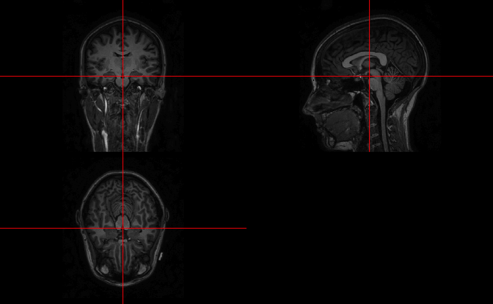
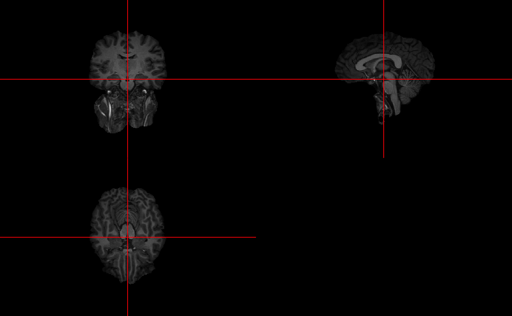
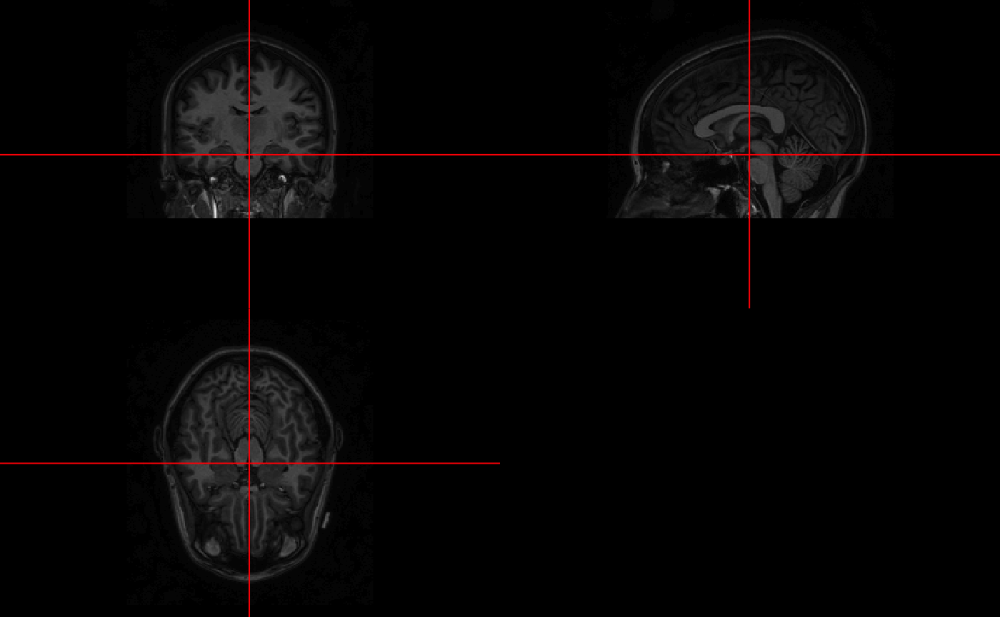
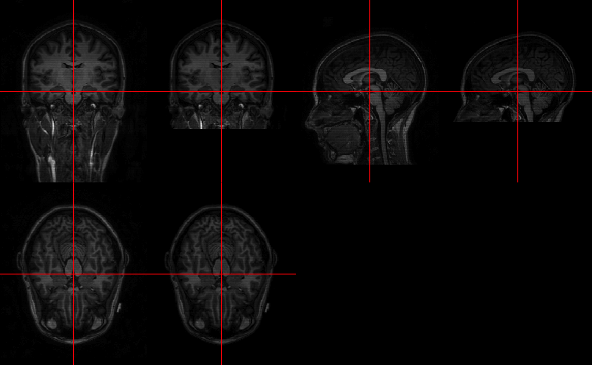
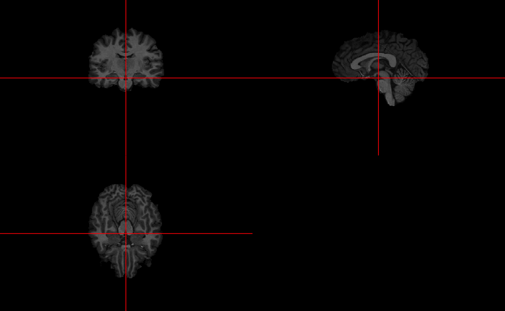
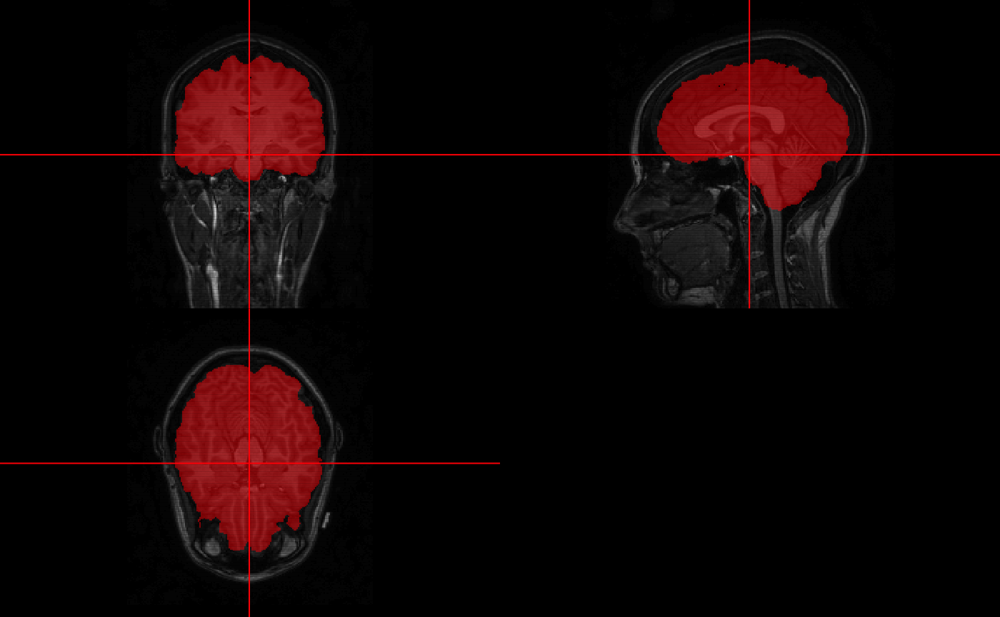
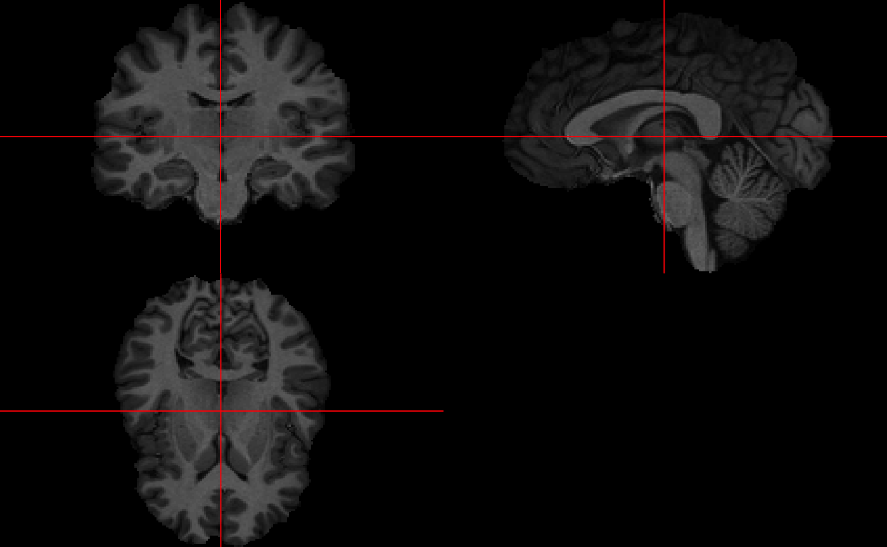

vignettes/brain_extract.Rmd
brain_extract.RmdAll code for this document is located at here.
In this tutorial we will discuss performing brain segmentation using the brain extraction tool (BET) in fsl and a robust version using a wrapper function in extrantsr, fslbet_robust.
For this analysis, I will use one subject from the Kirby 21 data set. The kirby21.base and kirby21.t1 packages are necessary for this analysis and have the data we will be working on. You need devtools to install these. Please refer to installing devtools for additional instructions or troubleshooting.
packages = installed.packages() packages = packages[, "Package"] if (!"kirby21.t1" %in% packages) { devtools::install_github("muschellij2/kirby21.t1") }
We will use the get_image_filenames_df function to extract the filenames on our hard disk for the T1 image.
library(kirby21.t1) t1_fname = get_t1_filenames( ids = 113, visits = 1) if (is.null(t1_fname)) { dl = TRUE } else { dl = !file.exists(t1_fname) } if (dl) { url = paste0("https://raw.githubusercontent.com/muschellij2/kirby21.t1", "/master/inst/visit_1/113/113-01-T1.nii.gz") t1_fname = tempfile(fileext = ".nii.gz") download.file(url, t1_fname) }
Let’s take a look at the T1-weighted image.
t1 = readnii(t1_fname) ortho2(t1)

Here we see the brain and other parts of the image are present. Most notably, the neck of the subject was imaged. Sometimes this can cause problems with segmentation and image registration.
Here we will use FSL’s Brain Extraction Tool (BET) to extract the brain tissue from the rest of the image.
if (have.fsl()) { ss_naive = fslbet(infile = t1_fname) }
bet2 "/private/var/folders/1s/wrtqcpxn685_zk570bnx9_rr0000gr/T/RtmpoO1dC0/file79775059eaca.nii.gz" "/var/folders/1s/wrtqcpxn685_zk570bnx9_rr0000gr/T//RtmpoO1dC0/file797759147a60" if (have.fsl()) { ortho2(ss_naive) }

We see that naively, BET does not perform well for this image.
Here we will use FSL’s Brain Extraction Tool (BET) to extract the brain tissue from the rest of the image. We use the modification of BET in extrantsr, which is called through fslbet_robust. In fslbet_robust, the image is corrected using the N4 inhomogeneity correction. The neck of the T1 image is then removed and then BET is run, the center of gravity (COG) is estimated, and BET is run with this new COG. We used a procedure where the neck is removed in 2 registration steps, which is more robust than just the one (which is the default).
We will do the bias correction explicitly here:
n4img = bias_correct( t1_fname, correction = "N4", retimg = FALSE, outfile = tempfile(fileext = ".nii.gz"), verbose = FALSE) if (have.fsl()) { template.file = fslr::mni_fname(brain = TRUE) template.mask = fslr::mni_fname(brain = TRUE, mask = TRUE) removed_neck = extrantsr::double_remove_neck( n4img, template.file = template.file, template.mask = template.mask) ortho2(removed_neck) double_ortho(t1, removed_neck) }
# Registration to template# Swapping Dimensions fslhd "/private/var/folders/1s/wrtqcpxn685_zk570bnx9_rr0000gr/T/RtmpoO1dC0/file79772836aba.nii.gz" fslorient -getorient "/private/var/folders/1s/wrtqcpxn685_zk570bnx9_rr0000gr/T/RtmpoO1dC0/file79772836aba.nii.gz"fslswapdim "/private/var/folders/1s/wrtqcpxn685_zk570bnx9_rr0000gr/T/RtmpoO1dC0/file79772836aba.nii.gz" RL PA IS "/var/folders/1s/wrtqcpxn685_zk570bnx9_rr0000gr/T//RtmpoO1dC0/file79777bb63f4f";# Running Registration of file to template# Applying Registration output is$warpedmovout
antsImage
Pixel Type : float
Components Per Pixel: 1
Dimensions : 170x256x256
Voxel Spacing : 1.20000004768372x1x1
Origin : 0 255 0
Direction : 1 0 0 0 -1 0 0 0 1
$warpedfixout
antsImage
Pixel Type : float
Components Per Pixel: 1
Dimensions : 182x218x182
Voxel Spacing : 1x1x1
Origin : -90 126 -72
Direction : 1 0 0 0 -1 0 0 0 1
$fwdtransforms
[1] "/var/folders/1s/wrtqcpxn685_zk570bnx9_rr0000gr/T//RtmpoO1dC0/file79772d3954f20GenericAffine.mat"
$invtransforms
[1] "/var/folders/1s/wrtqcpxn685_zk570bnx9_rr0000gr/T//RtmpoO1dC0/file79772d3954f20GenericAffine.mat"
$prev_transforms
character(0)# Applying Transformations to file# Applying Transforms to other.files# Writing out file# Writing out other.files# Removing Warping images# Reading data back into R# Reading in Transformed data# Dropping slices not in mask# Swapping Dimensions Backfslswapdim "/private/var/folders/1s/wrtqcpxn685_zk570bnx9_rr0000gr/T/RtmpoO1dC0/file797775d57de0.nii.gz" LR AP IS "/var/folders/1s/wrtqcpxn685_zk570bnx9_rr0000gr/T//RtmpoO1dC0/file7977133b3990";# Registration to template# Swapping Dimensions fslhd "/private/var/folders/1s/wrtqcpxn685_zk570bnx9_rr0000gr/T/RtmpoO1dC0/file7977154026cd.nii.gz" fslorient -getorient "/private/var/folders/1s/wrtqcpxn685_zk570bnx9_rr0000gr/T/RtmpoO1dC0/file7977154026cd.nii.gz"fslswapdim "/private/var/folders/1s/wrtqcpxn685_zk570bnx9_rr0000gr/T/RtmpoO1dC0/file7977154026cd.nii.gz" RL PA IS "/var/folders/1s/wrtqcpxn685_zk570bnx9_rr0000gr/T//RtmpoO1dC0/file79774c588ee0";# Running Registration of file to template# Applying Registration output is$warpedmovout
antsImage
Pixel Type : float
Components Per Pixel: 1
Dimensions : 170x256x256
Voxel Spacing : 1.20000004768372x1x1
Origin : 0 255 0
Direction : 1 0 0 0 -1 0 0 0 1
$warpedfixout
antsImage
Pixel Type : float
Components Per Pixel: 1
Dimensions : 182x218x182
Voxel Spacing : 1x1x1
Origin : -90 126 -72
Direction : 1 0 0 0 -1 0 0 0 1
$fwdtransforms
[1] "/var/folders/1s/wrtqcpxn685_zk570bnx9_rr0000gr/T//RtmpoO1dC0/file7977690819f20GenericAffine.mat"
$invtransforms
[1] "/var/folders/1s/wrtqcpxn685_zk570bnx9_rr0000gr/T//RtmpoO1dC0/file7977690819f20GenericAffine.mat"
$prev_transforms
character(0)# Applying Transformations to file# Applying Transforms to other.files# Writing out file# Writing out other.files# Removing Warping images# Reading data back into R# Reading in Transformed data# Dropping slices not in mask# Swapping Dimensions Backfslswapdim "/private/var/folders/1s/wrtqcpxn685_zk570bnx9_rr0000gr/T/RtmpoO1dC0/file797714a76102.nii.gz" LR AP IS "/var/folders/1s/wrtqcpxn685_zk570bnx9_rr0000gr/T//RtmpoO1dC0/file797778d1d4e5";
Let’s look at the skull-stripped image after doing all these steps.
if (have.fsl()) { ss = extrantsr::fslbet_robust(t1_fname, remover = "double_remove_neck", recog = FALSE) ortho2(ss) }

Here we see the skull-stripped image. But did we drop out “brain areas”?
if (have.fsl()) { alpha = function(col, alpha = 1) { cols = t(col2rgb(col, alpha = FALSE)/255) rgb(cols, alpha = alpha) } ortho2(t1, ss > 0, col.y = alpha("red", 0.5)) }

We can again use dropEmptyImageDimensions to remove extraneous slices, which helps with reducing storage of the image on disk, zooming in while plotting, and may aid registration.
if (have.fsl()) { ss_red = dropEmptyImageDimensions(ss) ortho2(ss_red) }

Again, we can see the zoomed-in view of the image now.